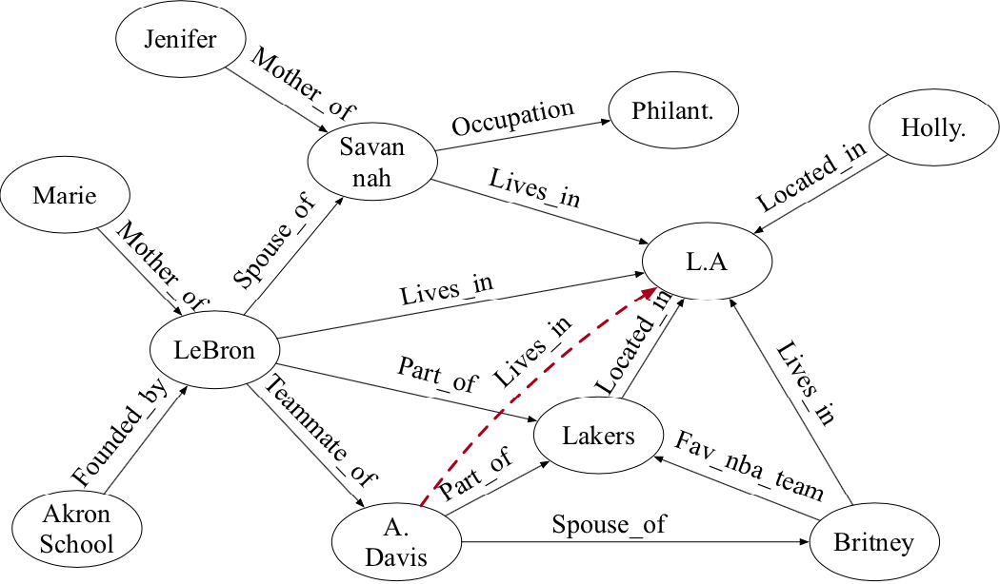
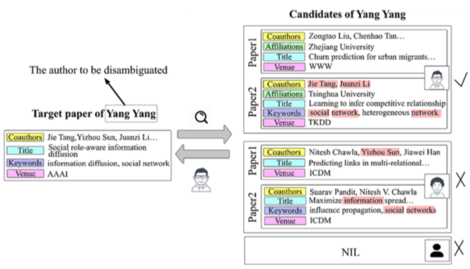
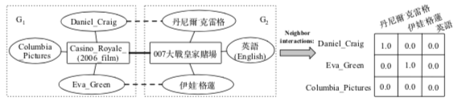
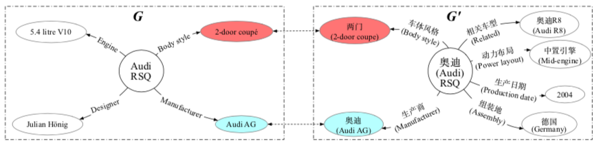
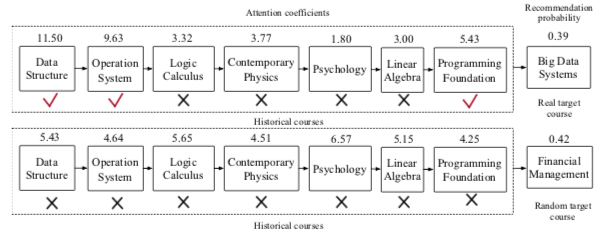
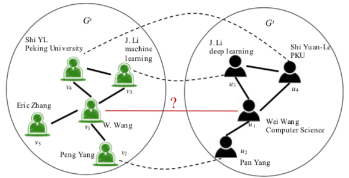

|
Bo Chen (陈波)
allanchen224 [at] gmail [dot] com
Email /
Github /
Google Scholar
I am now a first year PhD student at Knowledge Engineering Group(KEG), Department of Computer Science and
Technology of Tsinghua Universiy, under the surpervision of Prof. Jie Tang. My research interests include data integration, name disambiguation and reasoning on KG.
|
|
- on May, 2021,
We will hold the name disambiguation competition at IJCAI'21 Competition Track based on the newly-released version(na-v3) of
WhoIsWho dataset. We honestly invite all the researchers of interest to attend our competition!
|  |
Neural, Symbolic and Neural-Symbolic Reasoning on Knowledge Graphs
Jing Zhang, Bo Chen, Lingxi Zhang, Xirui Ke, Haipeng Ding
AI Open Journal, 2021
|
|  |
CONNA: Addressing Name Disambiguation on The Fly
Bo Chen, Jing Zhang, Jie Tang, Lingfan Cai, Zhaoyu Wang, Shu Zhao, Hong Chen and Cuiping Li.
IEEE Transaction on Knowledge and Data Engineering (TKDE), 2020, [Github]
|
|  |
BERT-INT:A BERT-based Interaction Model For Knowledge Graph Alignment
Xiaobin Tang, Jing Zhang, Bo Chen, Yang Yang, Hong Chen, Cuiping Li
International Joint Conference on Artificial Intelligence (IJCAI), 2020, [Github]
(Full Paper, acceptance rate: 12.6%)
|
|  |
JarKA: Modeling Attribute Interactions for Cross-lingual Knowledge Alignment
Bo Chen, Jing Zhang, Xiaobin Tang, Hong Chen, and Cuiping Li
Pacific-Asia Conference on Knowledge Discovery and Data Mining (PAKDD), 2020, [Github]
(Full Paper, acceptance rate: 21%)
|
|  |
Hierarchical Reinforcement Learning for Course Recommendation in MOOCs
Jing Zhang, Bowen Hao, Bo Chen, Cuiping Li, Hong Chen and Jimeng Sun
AAAI Conference on Artificial Intelligence (AAAI), 2019, [Github]
(Full Paper, acceptance rate: 16.2%)
|
|  |
MEgo2Vec: Embedding Matched Ego Networks for User Alignment Across Social Networks
Jing Zhang, Bo Chen, Xianming Wang, Hong Chen, Cuiping Li, Fengmei Jin, Guojie Sone, Yutao Zhang
International Conference on Information and Knowledge Management (CIKM), 2018, [Github]
(Full Paper, acceptance rate: 17%)
|
|
Projects
These are some open-sourced projects.
|
|
WhoIsWho
WhoIsWho is the world’s largest manually-labeled paper name disambiguation(NA) benchmark up to now, which consists about
900,000+ papers belonging to 70,000+ authors, 1,000+ names, and we also comprehensively define
two basic tasks, Continuous Name Disambiguation and Name disambiguation from Scatch in NA domain with corresponding SOTA baselines.
(see deatils WhoIsWho).
|
- September, 2013 - June, 2017, Bachelor, Department of Computer Science and Technology,
Information School, Renmin University of China.
- September, 2017 - June, 2020, Master, Department of Computer Science and Technology,
Information School, Renmin University of China, under the surpervision of Associate Prof. Jing Zhang and Prof. Hong Chen.
- September, 2021 - , PhD, Department of Computer Science and Technology, Tsinghua University,
under the surpervision of Prof. Jie Tang.
|